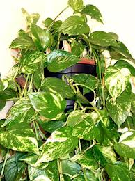

Scindapsus ou Pothos

Scindapsus ou Pothos (Epipremnum pinnatum, Scindapsus pictus de la famille des Aracées)
Toxique pour le Korat.
Partie toxique pour les chats en général et le Korat en particulier :
Pousses et feuilles.
Symptômes du processus pathologique :
Système digestif: Diarrhée, vomissements, salivation, difficultés à déglutir, saignements.
Voies respiratoires: Dyspnée, difficultés respiratoires, le rythme et la profondeur de la respiration sont perturbés.
Organes internes: Saignements de la matrice.
Autre: Saignements des gencives.